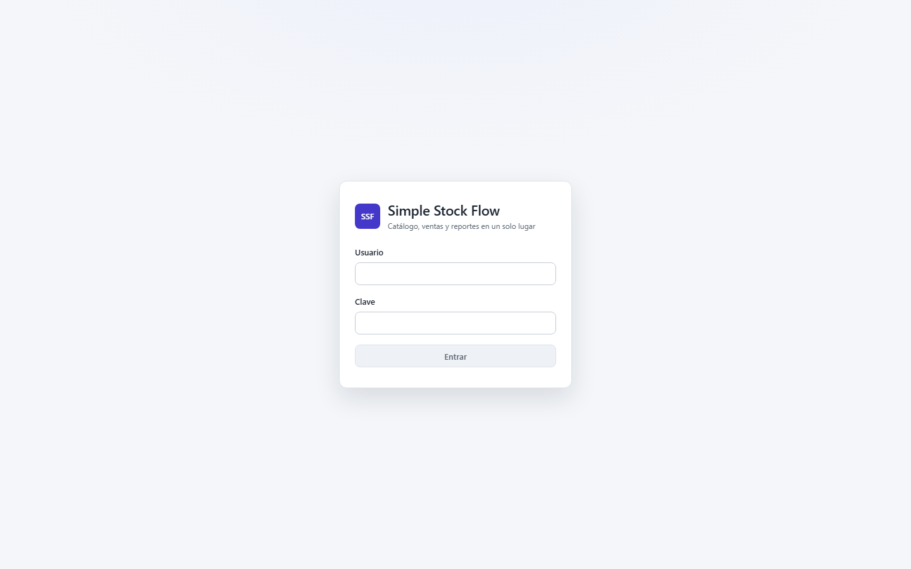
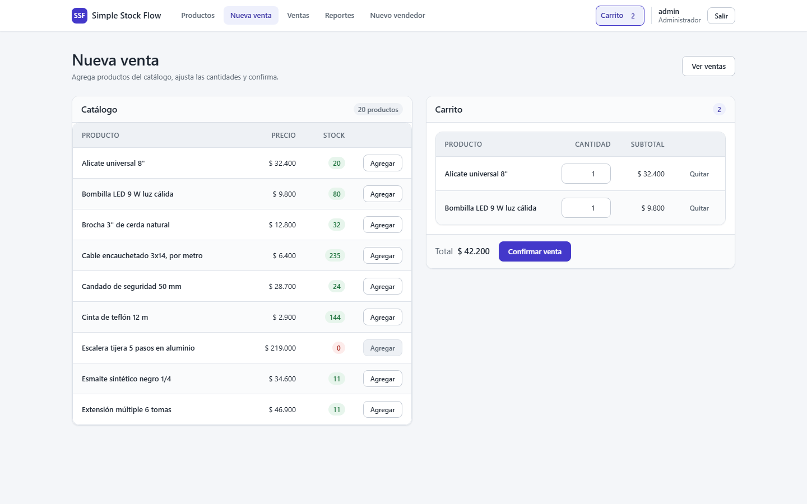
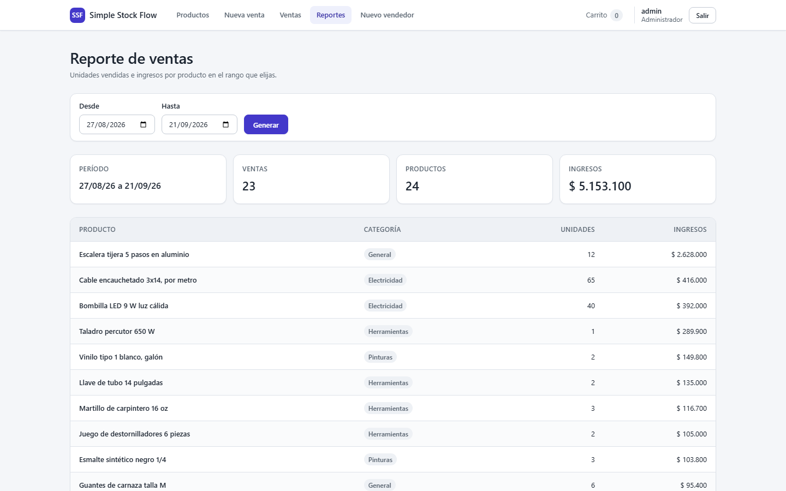

Un sistema de inventario y ventas que responde las dos preguntas sin contar a mano: el stock
que muestra el catálogo es el stock que hay, y el reporte de un período cerrado dice hoy lo
mismo que dirá dentro de un año.
El catálogo, con las existencias que hay en ese momento.
Qué hace
Cuatro cosas, y cada una con una regla que el sistema no deja saltarse.
Catálogo
Productos con nombre, precio, existencias, categoría e imagen. Búsqueda por nombre sin
distinguir mayúsculas y filtro por categoría. Un producto vendido no se elimina: se da de
baja y desaparece del catálogo, pero su venta sigue consultable.
Ventas
Se arma el carrito, se confirma, y el stock baja exactamente lo vendido. Dos cajas
vendiendo la última unidad al mismo tiempo no la venden dos veces. Una venta registrada
no se puede alterar después: no hay operación que lo permita.
Reporte por rango
Unidades e importe por producto, con el número de ventas y el total del período. La línea
de venta congela el nombre y la categoría del momento, así que renombrar un producto
después no reescribe un reporte ya cerrado.
Dos roles
El vendedor consulta el catálogo, registra ventas y ve los reportes. El administrador
además mantiene el catálogo y da de alta vendedores. Todo lo que no sea autenticarse
exige un token.
Cómo se ve
El recorrido completo, de entrar a medir. Las capturas salen del sistema levantado con Docker,
con sus datos reales: no hay maquetas.

Sin token no se pasa de aquí, ni desde el portal ni desde la API.
Ver a tamaño completo

El carrito se arma línea a línea. Lo que está agotado no se puede agregar.
Ver a tamaño completo

El reporte de un rango, con sus cuatro cifras y el detalle por producto. Volver a pedir
este mismo rango mañana devuelve exactamente estos números.
Ver a tamaño completo
Cómo está hecho
Arquitectura hexagonal en las dos mitades: el dominio no sabe que existe una base de datos ni
un navegador. Los tres diagramas salen del código, no de una pizarra.
La regla de dependencia, tal como la declaran los proyectos: del dominio no sale ninguna flecha.
Ver el diagrama suelto
El hexágono, dos veces. Las mismas tres capas en el servicio y en el portal.
Ver el diagrama suelto
El camino de una petición, capa por capa, hasta el motor y de vuelta.
Ver el diagrama suelto
Con qué está construido
.NET 8API REST hexagonal
Angular 20Portal hexagonal
PostgreSQLLas reglas, en el motor
DockerUn solo compose levanta la pila
Levantarlo
Hacen falta Docker y git. El último comando, ./verify.sh, necesita además bash,
curl y un intérprete python en el anfitrión. Ni .NET, ni Node, ni un cliente de
base de datos. Sus dos últimas secciones auditan los documentos del proyecto, que viven en un
repositorio privado: con solo estos tres clonados fallarán diciendo qué archivo les falta, y
es lo esperado.
$git clone https://github.com/code-dev-projects/simple-stock-flow-api.git$git clone https://github.com/code-dev-projects/simple-stock-flow-portal.git$git clone https://github.com/code-dev-projects/simple-stock-flow-infra.git$cd simple-stock-flow-infra$cp .env.example .env# y rellenar las tres claves que exige el arranque$docker compose up -d --wait$./verify.sh# comprueba el sistema de punta a punta
Dónde queda
Portal
http://localhost:8080
Documentación de la API
http://localhost:8080/swagger
Con el fichero base se publica un solo puerto, el del portal: la API y la base de datos no
salen de la red de Docker. El último comando, ./verify.sh, vuelve a levantar la
pila con el solapamiento de desarrollo y deja publicadas también la API en
:5000 y la base en :5432.
De esas tres claves, JWT_SIGNING_KEY tiene una regla que conviene saber antes:
32 caracteres como mínimo. Con una más corta la API se niega a arrancar —lo
dice en su registro—, el contenedor nunca llega a estar sano y
docker compose up -d --wait termina en error.
Los tres repositorios —api,
portal e
infra— tienen que quedar
hermanos en el mismo directorio: el compose vive en el tercero y construye las
imágenes desde ../simple-stock-flow-api y ../simple-stock-flow-portal.
El sistema arranca vacío: esos comandos levantan la base de datos, la API y el
portal, y no siembran ni un producto. El catálogo que enseñan las capturas de arriba lo carga
después, por la API, una herramienta aparte —simple-stock-flow-tools—
que es opcional y no hace falta para levantar nada. Sembrar, eso sí, pide más que los
comandos de arriba: Python con el paquete requests, el mismo Docker y una cuarta
clave en el .env —DEMO_SELLER_PASSWORD—. El sembrador habla con la
API en http://localhost:5000, que solo se publica con el solapamiento de
desarrollo: si vienes de ./verify.sh ya está publicado, y si levantaste solo con
el fichero base hay que volver a levantar la pila con
docker compose -f docker-compose.yml -f docker-compose.dev.yml up -d --wait.
Qué ocurre, y en qué orden, cuando docker compose up levanta la pila. Los tres
contenedores se encadenan por comprobaciones de salud, no por orden de arranque.
Ver el diagrama suelto
El manual técnico detalla cada variable de entorno, las migraciones y qué comprobar si algo
no responde.
{kind=link}
{kind=link}
{kind=link}
{kind=link}
{kind=link}
{kind=link}
{kind=link}